概要移動動作設計ツールはロボットの2次元平面上での移動経路計画機能を提供するツールでバージョン3.1.0.beta3からOpenHRPに組み込まれています．移動動作設計ツールはGrxUIのビューの一つであるPathPlanningビューと単体のRTコンポーネントとしても利用可能な移動動作設計コンポーネントからなります。まずは動画で大まかな手順を確認して下さい．
環境設定Eclipse起動とパースペクティブの表示通常通りEclipseを起動し、GrxUIパースペクティブを表示します。 GrxUIパースペクティブが表示されていない場合、「パースペクティブを開く(下図内[a])→「その他」をクリックし一覧から選択します。
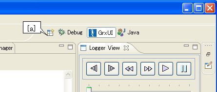
必要なビューの確認3DView、Path Planning、Logger View、Property View、Item Viewなど必要なビューが表示されていない場合、メニューバーの「ウィンドウ」→「ビューの表示」→「その他」をクリックし、追加します。
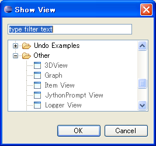
シーンの構築ロボットや障害物が記述されたモデルファイルをロードし、移動動作を設計するためのシーンを構築します。既存のプロジェクトをロードする場合メニューバーから「GrxUI」→「プロジェクトのロード」を選択します。 ロードするプロジェクトファイルを選択します。新規にシーンを構築する場合Item Viewから"Model"を右クリックし「load」を選択します。 ファイル選択ダイアログが開くので、ロードするファイルを選択してください。
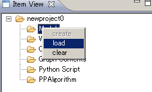
World State アイテムの作成Item ViewにてWorld Stateを右クリックし「create」を選択し、作成します。コリジョンペアの作成OpenHRPビュー内collisionタブから、ロボットと障害物間のコリジョンペアを作成します。使用するアルゴリズム用のパラメータセットを作成するItem Viewから"PPArgolithm"を右クリックし「create」を選択します。 プロジェクトを保存する際、アルゴリズム用パラメータも同時に保存されます。
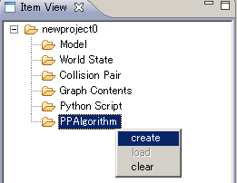
経路計画エンジンとの接続openhrp-path-plannerを実行します。実行するディレクトリには適切なネームサーバの位置を記述したrtc.confを用意して下さい．次にパースペクティブを一旦RT System Editorに変更して新たにステムエディタを開き、PathコンポーネントとPathConsumerコンポーネントをドラッグして配置してください。サービスポートとコンシューマポートを接続して下さい。
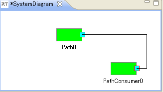
経路計画計算の実行PathPlannerビュー（下図）を使って各種条件設定を行い、計算を実行します。
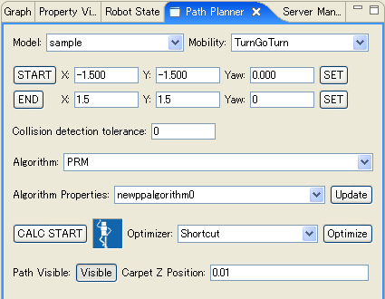
モデルと移動アルゴリズムの選択移動動作設計の対象とするモデルと、そのモデルが持つ移動アルゴリズムを選択します。移動動作設計コンポーネントと接続されていないと、移動アルゴリズム等いくつかの設定項目が表示されませんので、表示されていない場合はRT System Editorを用いて接続を確認してください。 始点・終点経路探索の始点・終点を設定します。 ロボットを希望の始点または終点まで移動させ、始点または終点設定ボタンを押します。入力エリアへ数値を直接入力することもできます。 SETボタンでその位置にロボットが移動します。 干渉チェック時のトレランス干渉チェック時のトレランスを設定します．干渉チェックを行う2つの物体の間の距離がこの値よりも小さい時，干渉が発生しているものと見なされます．これによって障害物との間に常に一定以上の距離を保つことができます．経路計画アルゴリズム、パラメータ選択ボックス経路計画に使用するアルゴリズムとパラメータを選択します。アルゴリズム選択ボックスから、希望のアルゴリズムを選択してください。現在のところ、RRTとPRMが登録されています。アルゴリズムが表示されていない場合、移動動作設計コンポーネントとの接続を確認して下さい． また、アルゴリズムに適用するプロパティを、Algorithm Properties選択ボックスから選択してください。Algorithm PropertiesのUpdateボタンを押すと、現在選択しているアルゴリズム用のプロパティを移動動作設計コンポーネントから取得してPPAlgorithmアイテムに設定します。 プロパティの値は、Property Viewから変更できます。
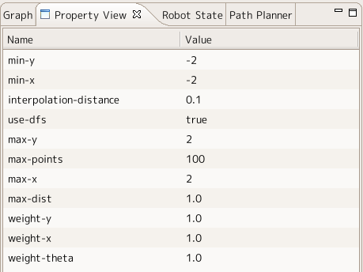
PRM、RRTの双方ともに共通するプロパティは以下のとおりです。
デフォルトで乱数は(-2,-2) ~ (2,2)の範囲に設定され、補間距離は0.1、距離の重みは全て1です。 PRMアルゴリズムは以下のプロパティを持ちます。
デフォルト値では、近傍距離が1.0、最大点数が100個となっています。 RRTアルゴリズムは以下のプロパティを持ちます。
デフォルト値では、近傍距離が0.1、最大試行回数が10000回となっています。 経路計画計算開始ボタンを押し、経路計画を開始してください。計算インジケータが動き、ダイアログが表示されます。計算を途中で中断するにはダイアログのボタンを押して下さい。経路及びロードマップの表示計算が終了すると、経路表示ボタンが選択可能になり、経路の表示・非表示を切り替えることができるようになります。
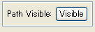
また、Logger View上のボタンおよびスライダーを動かすことで、経路上を移動させることができます。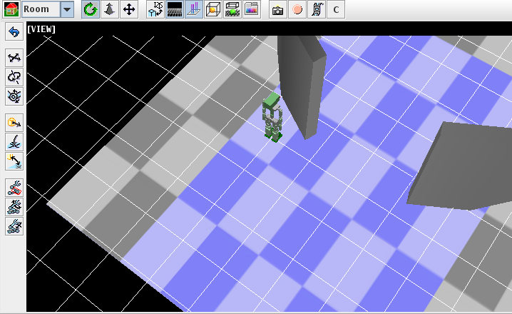
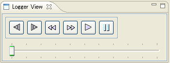
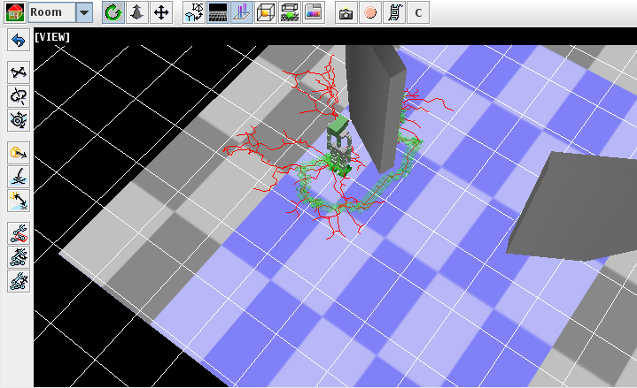 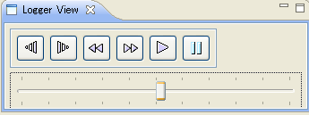 経路の最適化計画された経路を最適化するには、経路最適化アルゴリズムを選択し、Optimizeボタンを押して下さい。経路を可視にしている場合、表示が最適化されたものに更新されます。 |